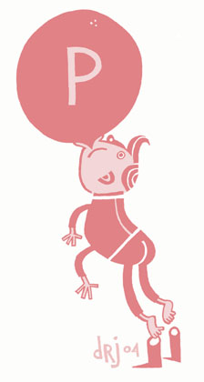
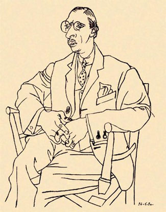
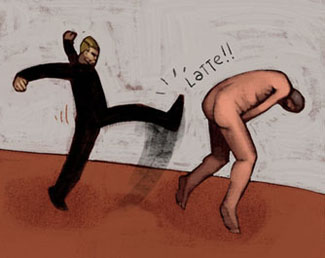
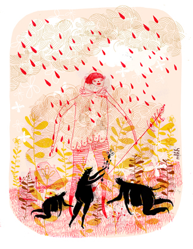

РУЧКИ-НОЖКИ
Юбилейная
Все наверняка помнят короткий текст, который каждый из нас раз по десять получил по почте от добрых друзей, про то, что если поменять местами буквы в слове, оставив на местах первую и последнюю, никто ничего не заметит и текст будет легко читаться. Я, мне кажется, нашел аналог этого эффекта в рисунке.
Человеческая пластика — не единственное доступное нам выразительное средство, но точно самое выразительное, я уже говорил, почему. В известном смысле мы, иллюстраторы, говорим на одном языке с мимами или какими-нибудь индусскими танцорами. Говорить на этом языке можно с разными интонациями, разными голосами; можно даже жестикулировать уже внутри него — подкрепляя свои слова, например, с помощью цвета. Все равно язык телодвижений и жестов остается единственным языком, который понятен без перевода (с известными оговорками).
Нарисованный человек неизбежно несет некое пластическое сообщение, вернее, он сам и есть это сообщение. Вопрос только в том, насколько оно внятное и нескучное.

Так вот, в человеке — фразе, в человекофразе, как правило, пять таких перво-последних букв, я бы их назвал ключевыми — это ладони, ступни и голова (у которой да, есть свой собственный язык, мимика, но о нем разговор отдельный, и я, например, склонен считать его менее интересным на слух и более располагающим к неискренности (уже говорил об этом, там же). Опять же, в лице мышц кажется два с лишним десятка, а во всем теле — эээ…).
Пикассо, портрет Стравинского. Мой кандидат на звание Лучшего Портрета Вообще.

По расположению, по движению ступней и рук, наклону головы легко достроить все остальное. Уже потому, что и сами руки-ступни-голова не могут двигаться независимо, а только продолжают движения позвоночника и конечностей, как барашек на волне. В сложной сцене (сюжет которой заранее придуман и продуман, само собой) главное выяснить взаимное движение рук и ног персонажей, остальное приложится. И лучше всего то, что у любого художника под рукой всегда есть свободная модель, готовая принять любую нужную позу.
Рауль Синьер (Raoul Sinier), ранее известный как Ра

Проверьте себя, залейте на вашей иллюстрации черным (белым) все, кроме рук и ног — должно получиться нескучно.
Максвелл Лорен Холиоук-Хирш (Мaxwell Loren Holyoke-Hirsch)

PS. Между тем колонке моей в среду год. Оставайтесь с нами.